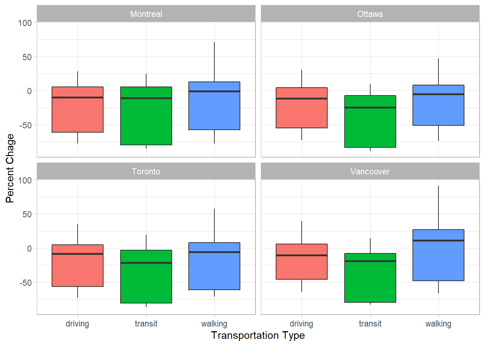
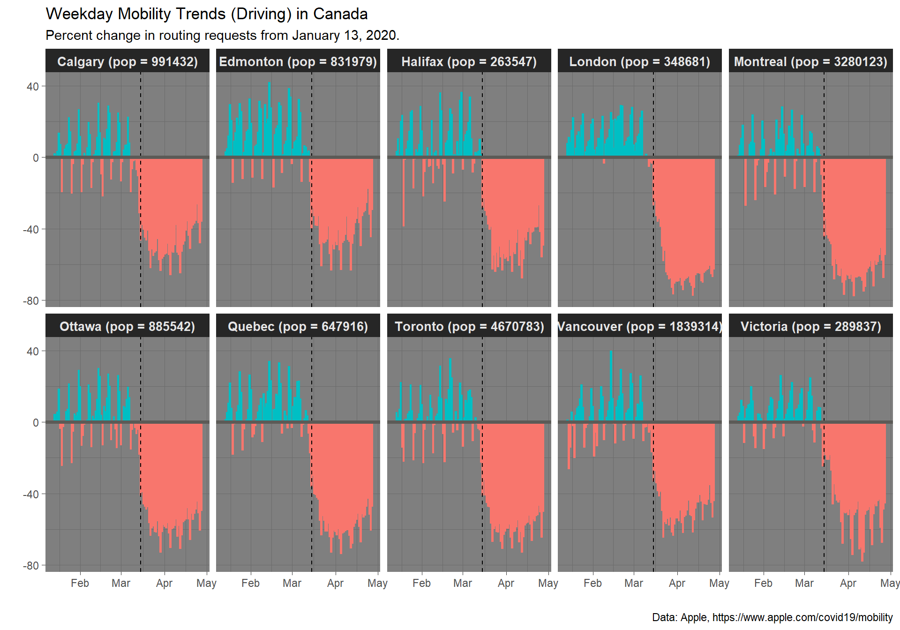
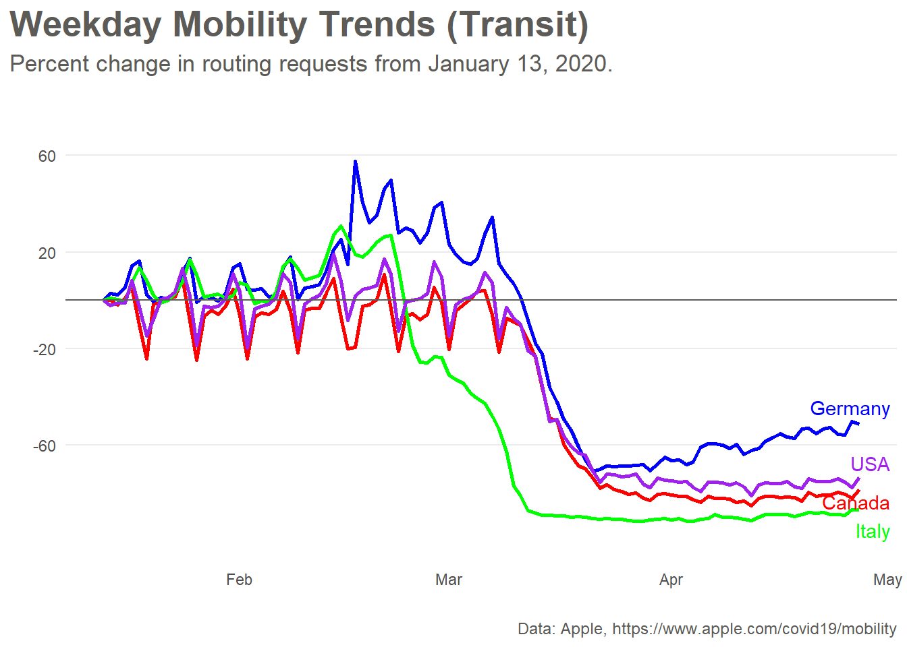

Since quarantines became mandatory in many counties, we have been affected many different ways. One of these ways is that we are travelling much less often that we have before. And, if we are travelling, we going to familiar places. Let’s see whether the data reveals any patterns in regards to the way we search google maps on our phones.
This is a message from Apple:
Mobility Trends Reports
Learn about COVID‑19 mobility trends in countries/regions and cities. Reports are published daily and reflect requests for directions in Apple Maps. Privacy is one of our core values, so Maps doesn’t associate your data with your Apple ID, and Apple doesn’t keep a history of where you’ve been.
The data is accessible at the following website: https://www.apple.com/covid19/mobility.
Let’s load the apple data into R environment by using RStudio’s interface. For the purpose of working with the data in this Rmarkdown document, we will use the code strokes to load the data and assign it the name, “apple”.
apple <- read_csv("apple_data_2020-04-27.csv")We can look through the data and get a sense of what it looks like using the glimpse() command, or use the data viewer to inspect it.
glimpse(apple)Notice, that we have wide data that isn’t tidy, so we’ll need to do some tidying. Also, we will rename the dataset, add a new variable called change that measures the percent relative to the date on January 13, 2020.
apple_long <-
apple %>%
pivot_longer(cols = 5:ncol(apple),
names_to = "date",
values_to = "index"
) %>%
mutate(date = as.Date(date),
change = (index - 100)) %>%
select(-alternative_name)Let’s look at some summaries:
apple_long %>%
# count observations by geo_type and transportation_type
group_by(geo_type, transportation_type) %>%
count() %>%
# regroup to get % by geo_type
group_by(geo_type) %>%
mutate(geo_prop = (n/sum(n)*100)) %>%
# regroup to get % by transportation_type
group_by(transportation_type) %>%
mutate(transport_prop = (n/sum(n)*100)) %>%
# ungroup to get overall %
ungroup() %>%
mutate(prop = (n/sum(n)*100))## # A tibble: 7 x 6
## geo_type transportation_type n geo_prop transport_prop prop
## <chr> <chr> <int> <dbl> <dbl> <dbl>
## 1 city driving 15794 35.6 18.6 12.9
## 2 city transit 12932 29.2 81.9 10.5
## 3 city walking 15582 35.2 70 12.7
## 4 country/region driving 6678 41.2 7.88 5.44
## 5 country/region transit 2862 17.6 18.1 2.33
## 6 country/region walking 6678 41.2 30 5.44
## 7 sub-region driving 62222 100 73.5 50.7In this plot, let’s take a look at the number of routing requests apple maps grouped by different transpotation types. This box plot shows the general trend for each request relative to January 13, 2020. Notice that the box plot doesn’t reveal what date, it merely shows the distribution of the change variable.
apple_long %>%
filter(region %in% c("Toronto", "Ottawa", "Montreal", "Vancouver")) %>%
ggplot(aes(x=transportation_type,
y=change,
fill = transportation_type)) +
geom_boxplot() +
facet_wrap(~ region)+
theme(legend.position = "none")+
labs(x = "Transportation Type",
y = "Percent Chage")
In order to examine more Canadian cities, we can use another dataset that contains all these cities. We’ll also get to have a look at a new package (the maps package) and filter the world.cities data by country and population.
Have a quick look at the variables contained in the world.cities data, and see that there are 43, 645 observations in this world.cities data.
world.cities %>%
glimpse()## Observations: 43,645
## Variables: 6
## $ name <chr> "'Abasan al-Jadidah", "'Abasan al-Kabirah", "'Abdul Hak...
## $ country.etc <chr> "Palestine", "Palestine", "Pakistan", "Kuwait", "Palest...
## $ pop <int> 5629, 18999, 47788, 21817, 2456, 3434, 9198, 5492, 2270...
## $ lat <dbl> 31.31, 31.32, 30.55, 29.36, 32.03, 32.03, 9.77, 2.75, 3...
## $ long <dbl> 34.34, 34.35, 72.11, 47.98, 35.07, 35.20, 44.65, 46.30,...
## $ capital <int> 0, 0, 0, 0, 0, 0, 0, 0, 0, 0, 0, 0, 0, 0, 0, 0, 0, 0, 0...In order to use the Canadian cities list with the Apple data, we’ll need to to create a list of major Canadian cities from the world.cities dataset in the maps package. Once we have this list, we’ll use it to join to the apple_long data using an inner_join function.
can_pop_cities <- world.cities %>%
filter(country.etc == "Canada") %>%
filter(pop > 100000)Performing an inner_join matches the observations in one dataset to those in another dataset and filters out those that do not match. We are setting the city names in the can_pop_cities data (the variable is name) and the region variable in the apple_long data to match. This will give us a new dataset that only includes data for the cities that match. Then, we will assigned the new joined data as an object called plot_data.
plot_data <- apple_long %>%
inner_join(select(can_pop_cities, name, pop),
by= c("region" = "name")) %>%
filter(transportation_type == "driving") %>%
mutate(positive = change>=0) %>%
select(geo_type, region, transportation_type, date, change, pop, positive)Note that we only need a few of the variables, so we are using the select() command to keep variables we’re interested in for our plot.
plot_data %>%
mutate(region = glue::glue("{region} (pop = {pop})")) %>%
ggplot(aes(x = date, y = change, fill = positive, colour = positive))+
geom_col()+
facet_wrap(~region, ncol = 5)+
geom_vline(xintercept = ymd("2020-03-15"), linetype = "dashed")+
geom_hline(yintercept=0, color="#5c5b57", size=1.25) +
labs(title="Weekday Mobility Trends (Driving) in Canada",
subtitle = "Percent change in routing requests from January 13, 2020.",
caption = "Data: Apple, https://www.apple.com/covid19/mobility",
x="",
y="") +
theme_dark() +
theme(legend.position = "none", strip.text = element_text(size = 10, face = "bold"))
Let’s replicate the plot that is shown on Apple webpage data. The website is https://www.apple.com/covid19/mobility.
apple_long %>%
filter(region %in% c("Canada", "Germany", "United States", "Italy")) %>%
filter(transportation_type == "transit") %>%
# relabel USA
mutate(region = ifelse(region=="United States", "USA", region)) %>%
# a trick to label just the ends of the lines
mutate(label = ifelse(date==max(date), region, "")) %>%
# plot
ggplot(aes(x=date, y=change, group=region, color=region)) +
geom_line(size = 1) +
# time to fiddle to get it to look just right
scale_y_continuous(breaks = c(-60, -20, 20, 60),
limits = c(-100, 80)) +
scale_color_manual(values=c("red", "blue",
"green", "purple")) +
guides(color = FALSE) +
ggrepel::geom_text_repel(aes(label = label),
nudge_x = 3,
na.rm = TRUE) +
labs(title="Weekday Mobility Trends (Transit)",
subtitle = "Percent change in routing requests from January 13, 2020.",
caption = "Data: Apple, https://www.apple.com/covid19/mobility",
x="",
y="") +
geom_hline(yintercept=0, color="#5c5b57", size=.4) +
theme_minimal() +
theme(plot.title.position = "plot",
plot.title = element_text(face="bold", size=20,
color="#5c5b57"),
plot.subtitle = element_text(size=13, color="#5c5b57"),
plot.caption = element_text(size=9, color="#5c5b57"),
panel.grid.major.x = element_blank(),
panel.grid.minor.y = element_blank(),
panel.grid.minor.x = element_blank())
It’s also important to keep in mind that Apple has a statement about their data tracking. It’s important to know that this data is not linked to specific users:
About This Data The CSV file and charts on this site show a relative volume of directions requests per country/region or city compared to a baseline volume on January 13th, 2020.
We define our day as midnight-to-midnight, Pacific time. Cities represent usage in greater metropolitan areas and are stably defined during this period. In many countries/regions and cities, relative volume has increased since January 13th, consistent with normal, seasonal usage of Apple Maps. Day of week effects are important to normalize as you use this data.
Data that is sent from users’ devices to the Maps service is associated with random, rotating identifiers so Apple doesn’t have a profile of your movements and searches. Apple Maps has no demographic information about our users, so we can’t make any statements about the representativeness of our usage against the overall population.
For your plot, please create a plot that includes a different country and cities. You may need to play around to find the cities, but they should be in the world.cities data and you can check on the website to see if they’re included in the Apple mobility data.
Save the plot as a file the way we learned last week.
Thank you to Eric Green for the inspiration for these plots and some of the code.